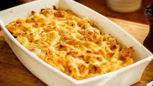

back
Cheesy Pasta Recipe

Description
Delicious yet so Easy Cheesy Pasta Bake, the perfect family meal. Why not get the Emmas in the kitchen with you to cook this?
The ultimate cheese lovers dream! Crispy melted cheese on top of creamy cheesy pasta, so good!
Cheese Sauce
- Flour
- Milk
- Butter
- Cheddar
- Parmesan
Pasta and Other
- A pasta of your choice (preferably piece versus string)
- Chorizo
- Sriracha
- Paprika
- Spinach
Steps!
- Prepare ingredients and bring water to a rolling boil.
- Fry off chorizo to leave only the small amount of cooking oil in the pan.
- Using this oil as a base, add butter and put on low heat until melted and combined. Start the pasta boiling.